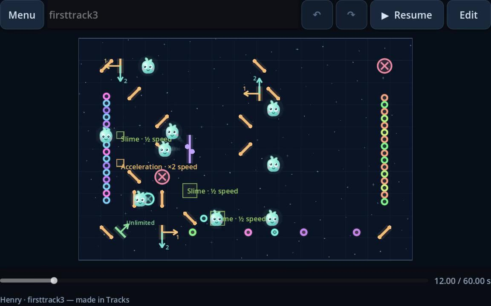
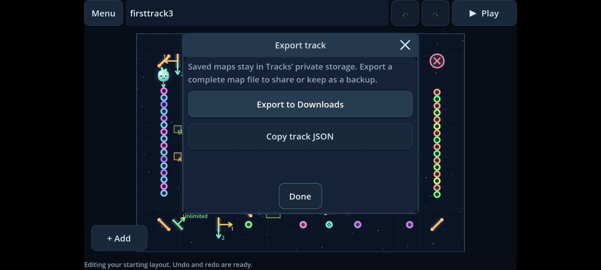

Töne & Instrumente
Wähle Tonhöhe, Klang und Dauer für jeden Ton.
Ein Spielplatz für deine Ohren
Baue eine Welt, die Musik macht. Platziere Töne, lenke kleine Tonelings und verwandle ihre Wege in Melodien.
Entdecke TracksFang mit ein paar Tönen an. Schau, wohin sie dich führen.
Lerne die Tonelings kennen
Tonelings spielen Töne, wenn sie sie berühren. Du komponierst, indem du Klänge anordnest und ihre Wege gestaltest — eine Musikidee, die du sehen, hören und immer weiter verändern kannst.
Wähle Tonhöhen und Instrumente. Baue eine Melodie oder kombiniere mehrere Stimmen.
Lenke Tonelings mit Reflektoren um. Ergänze Weichen, Teleporter und Bereiche, die ihr Tempo verändern.
Drücke auf Play, probiere eine andere Anordnung und speichere deinen Track, wenn alles passt.
Ein Blick in Tracks
Von ein paar Tönen zu einer kleinen Musikmaschine. Hier siehst du einen von Henrys Tracks und wie sich ein Track unter Android teilen lässt.

Zum Ausprobieren gemacht
Verschiebe einen Ton, wechsle das Instrument oder schicke einen Toneling auf einen anderen Weg. Pausiere, ändere und spiele weiter, bis alles zusammenpasst.

Wähle Tonhöhe, Klang und Dauer für jeden Ton.
Kombiniere Reflektoren, Weichen, Teleporter und Tempoänderungen.
Speichere Tracks und exportiere sie zum Teilen oder als Sicherung.
Tracks ist in einer frühen Entwicklungsphase und entsteht zuerst für Android. Die App und ihre Klänge entwickeln sich weiter. Bald gibt es mehr zu entdecken.